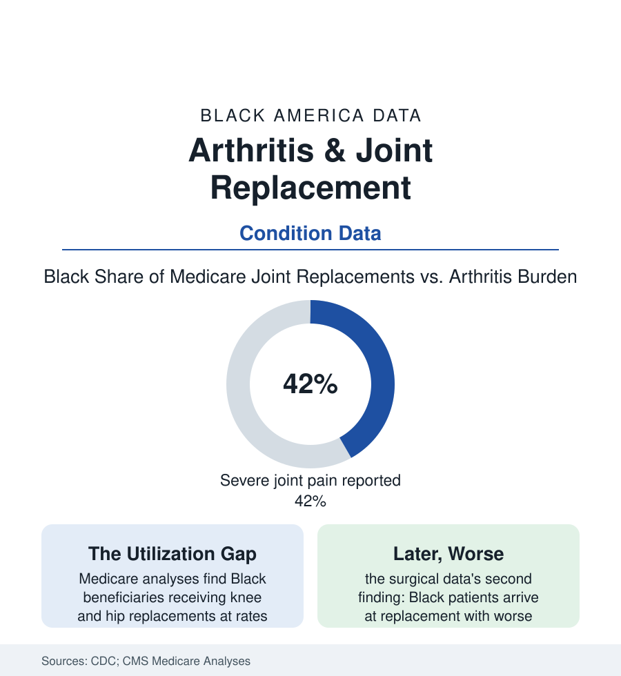

Black Public Health
Arthritis and the Replacement Gap: Pain Borne Longer, Surgery Offered Later
Black Americans carry arthritis at similar or higher rates with more severe pain — and receive joint replacements at markedly lower rates in the Medicare data. The orthopedic file.

Arthritis is the nation's leading cause of disability and one of its most ordinary: roughly one in five Black adults carries a doctor's diagnosis in the CDC's surveillance, with severe joint pain reported at rates above the national pattern — the knees and hips of the workforce that stood, lifted, cleaned, and carried through this atlas's employment files. The condition is also, uniquely in this section, fixable: the joint replacement is among medicine's most successful operations. The Medicare data show who gets the fix, and when. This article reads the orthopedic file.
Burden: The Wear of the Working Body
The prevalence tables show Black adults at parity or above on diagnosed arthritis overall, with the composition tilted to the harder rows: the severe-pain share among those with arthritis (running in the two-fifths range in the CDC's analyses against roughly a third overall), the activity-limitation rows (the arthritis-attributable work limitation in the survey data), and the obesity interaction (the load multiplier the obesity file quantifies — each condition's data inside the other's). The etiology is occupational as much as metabolic in the cohort literature: the joint-loading careers of the service and industrial files (the housekeeper's knees, the nursing aide's back and shoulders, the warehouse and line worker's cumulative load in the ergonomics studies) priced into cartilage decades before the diagnosis, the injury file's contribution (the younger Black man's trauma history arriving as post-traumatic arthritis in the orthopedic clinic), and lupus and the inflammatory arthritides of the autoimmune file in their lanes. The management tier beneath surgery is where the system's response concentrates by default: the NSAID and analgesic prescribing data, the physical-therapy referral file (the exercise-therapy evidence base strong, the referral and completion data thin and uneven), the injection series, and the chronic-pain machinery of the pain article — the long conservative corridor the data show Black patients walking further down before the surgical door.
The Replacement Gap: Offered, Chosen, Delivered
The utilization data are the section's most surgical: Medicare analyses across decades find Black beneficiaries receiving total knee replacements at rates on the order of a third lower and hip replacements similarly lower than white beneficiaries — a gap that has narrowed slowly and never closed, surviving the studies' adjustments for prevalence, severity, income, and geography in the major analyses. The mechanism literature divides the gap with unusual honesty among its stations: the referral station (the primary-care-to-orthopedics pipeline's differential flow in the referral studies), the offer station (the surgeon's recommendation rates in the standardized-patient and chart studies — lower offers at the same disease), the preference station — real, and the literature's most abused finding (Black patients in the preference studies expressing more concern about surgical risk and recovery support, expectations of pain and outcome shaped by the community's own outcome data — the preference formed downstream of the very disparities it is then cited to explain, the methodologists' caution printed in the same journals), and the delivery station (the hospital-volume file: Black patients receiving replacements at lower-volume hospitals at higher rates in the Medicare data, volume being the outcome literature's most reliable predictor — the sorting of patients, not just the offering of surgery, carrying the gradient). The complication and revision rows complete the ledger the preference studies should be read beside: the readmission and infection rates by the delivery map's lines, the rehabilitation access after (the PT referral and home-health files again), and the function outcomes at a year — the gap's final form being not only fewer operations but later ones, on worse joints, in thinner-resourced rooms.
The Counter-Evidence: Where the Gap Closes
The equal-access systems write the file's control group: the VA's orthopedic data (the replacement gap attenuated inside the integrated system in the published analyses — the offer made inside one roof, the cost removed, the referral internal), the bundled-payment experiments (Medicare's joint-replacement bundles in the demonstration data — their equity rows argued in both directions in the evaluations, the cherry-picking warnings noted), and the decision-aid trials (the structured preference-clarifying tools raising informed choice without erasing the rate gap — the finding that even perfect information leaves the referral architecture standing). The workforce line belongs in the file too: orthopedics is among the least diverse specialties in the pipeline data (the medical-student article's table — the Black share of orthopedic residents in the low single digits, the specialty's own academy running the pathway programs the numbers demand), in a section where the patient's trust questions and the surgeon's offer rates are measured in the same studies. The research frontier in the current record: the appropriateness-criteria era (the scoring systems meant to standardize the offer — audited, in the early equity analyses, for whether the standard widens or narrows the line it replaced) and the same-day-discharge shift (the outpatient replacement's eligibility criteria quietly re-sorting who qualifies — the file's next table writing itself now).
Reading the Arthritis Data
Similar pain, more of it severe, a third fewer of the definitive operations, arriving later and to quieter operating rooms: the arthritis file is the health section's cleanest proof that a disparity needs no exotic mechanism — only a corridor with doors, and doors that open at different speeds. The joints keep their own record, in cartilage, of every year the corridor took. The Medicare tables publish the count. Nothing in them is ambiguous except the will to close it.
More in Black Public Health
Hypertension Among Black Adults: Prevalence, Control, and Consequences
About 55 percent of Black adults have hypertension — the highest rate of any U.S. group. Prevalence, onset, control, and the stroke, heart, and kidney consequences in the data.
Diabetes Among Black Adults: Prevalence and Complications
Nearly one in five Black adults has diabetes, diagnosed or undiagnosed — and its complications fall with particular weight. The CDC data on prevalence, control, and outcomes.
Black Life Expectancy: The Gap at Birth and Its Causes
Black life expectancy at birth is about 73 years, roughly five years below the national figure — the summary measure of every health gap in this section. The CDC data.
Source: Centers for Disease Control and Prevention arthritis surveillance; Centers for Medicare & Medicaid Services procedure data; Arthritis Foundation; Hospital for Special Surgery and VA studies.